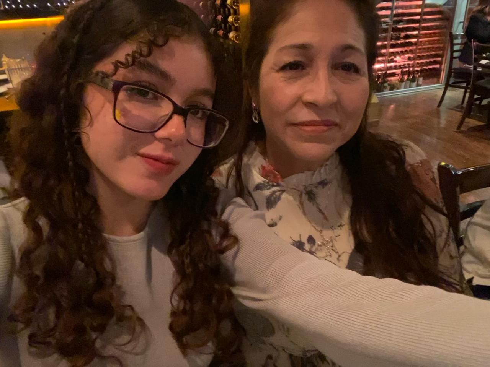
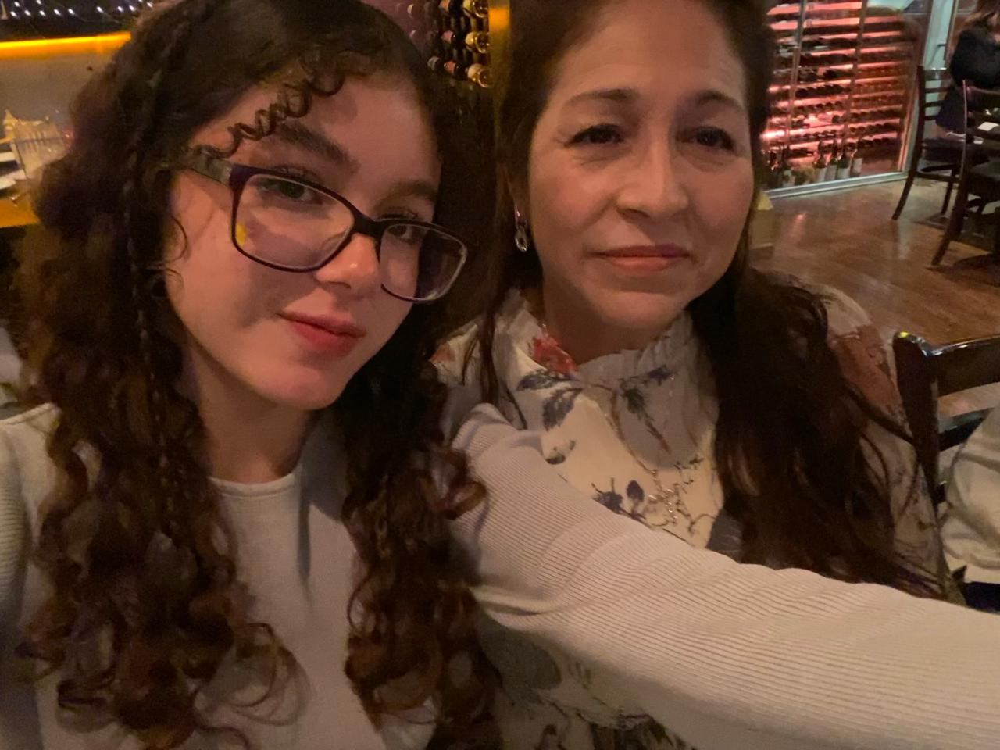

Isabel Cuevas

Soy la menor de 5 hermanos, 3 hermanos y 1 hermana,
siempre hemos sido muy cercanos todos a pesar de
nuestra gran diferencia de edades, y nos encanta
pasar tiempo juntos y compartir experiencias y eso
siempre me ha gustado, ya que los considero mis
mejores amigos, junto con mi mamá.
Mi infancia fue bonita, creci junto con primos
de mi edad y todo el tiempo estabamos juntos,
jugando, coloreando,viendo caricaturas o yendo
a fiestas infantiles juntos, tambien pasaba mucho
tiempo con mi hermana y mis abuelos.
Siempre eh tenido una buena rendicion academica,estudie en la
secundaria Tecnica no.29, ahi hice muchas amistades que sigo
conservando hasta la fecha, decidi entrar a la preparatoria
Cetis 156 en la especialidad de programacion y estoy cursando
4to semestre
Soy una persona muy tranquila,salgo poco con mis
amigos en general, mi mayor parte del tiempo la
paso con mi familia, en especial mi hermano mayor
Fausto,su esposa Johana, mi hermana Karina y mi
mamá, saliendo a comer, tomar café y platicar.
| CARACTERISTICAS | POSTRES FAVORITOS | COMIDAS FAVORITAS |
| Mi cabello chino | Nieve de Chcolate | Ceviche |
| Soy muy emocional | Flan | Enchiladas verdes |
| Soy caprichosa | chocolates | Hamburguesas |
| Artistas Favoritos | Canciones Favoritas | Hobbies |
| One Direction | All too well (taylors version) | Mirar peliculas y series |
| Taylor Swift | A.M | Salir a cafés |
| Tiago pzk | You belong with me | Escuchar musica |
Amistades más cercanas
|
ALUMNA:Cuevas Murillo Rosalba Isabel
GRUPO:4BPM
MATERIA:Desarrollo de Aplicaciones Web
PROFESOR:Jose Cruz Ochoa Lopez
 
